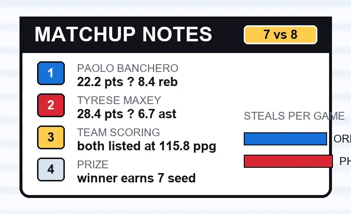

Winner gets the 7 seed
The current NBA schedule listing labels this East Play-In game as “Winner earns 7 seed.”
Orlando and Philadelphia both enter this Play-In matchup at 45-37, but the setting is not neutral. The 76ers host on Wednesday, April 15, 2026, with the winner taking the East No. 7 seed and the loser getting one more chance for No. 8.
This is the kind of Play-In game where the record does not separate the teams, so the details matter more. Orlando brings Paolo Banchero's size and Jalen Suggs' pressure. Philadelphia brings Tyrese Maxey's creation and the home floor.
The preview angle I would keep simple: Orlando has to survive Maxey's speed without losing its half-court shape, while Philadelphia has to keep the game from becoming a long, physical possession battle.

The current NBA schedule listing labels this East Play-In game as “Winner earns 7 seed.”
Both teams are listed at 45-37, which makes home-court rhythm and late-game shot quality more important.
The NBA schedule feed lists Prime Video as the national TV broadcaster, with SiriusXM on national radio.